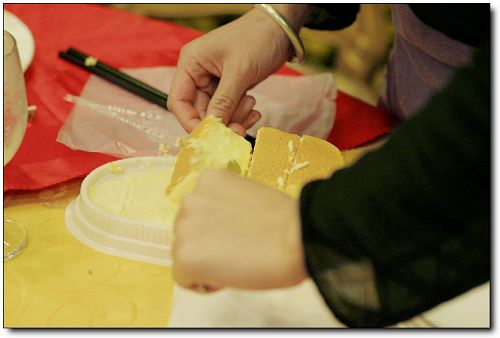

见面 @ Sep 28, 2009
昨有贵客到，众姐妹又有见面的机会。
这里省去快乐文字若干。。。。。。。
首先得赶紧吃午饭，接着又是饭局的今晚。
努力睁大惺忪双眼，坚持到放假。

弥补上回小肥洋拍摄的惨状，虽然在我拍摄时问问总是动来动去，还是抓拍到她的古典美，而旗旗美女为何眼神那么忧郁？让人不忍心上大头照呢~话说shuwua和maggie的茶经听得我们一楞一惊叹，知识渊博的人总会得到更多的喜爱。知道shuwua在，我特地换了环保的棉麻衬衣赴宴。喜欢和maggie领导没大没小的开玩笑，她从来没生气过，但听过她与shuwua的茶经，对她的喜爱又多了些敬佩，原来她有许多宝藏还没暴露出来呢~

问问带来的美味芝士蛋糕。

9 Responses to “见面”
2009-09-28
想看你的，特别是那头卷毛：）
2009-09-28
Maggie就没一张拍清楚。。。
2009-09-28
poor Maggis, she really likes to take pictures. more exercise needed indeed!
2009-09-28
我动来动去，没想到又被大头了。。。郁闷。好在这次没有提裤子。我强烈要求将我的照，换茶自拍图
2009-09-28
问问好美：）
2009-09-28
问问息怒，我的技术不过关，害大家白等茶的卷毛儿照了，不好意思。
2009-09-28
the first photo, why does every one look so serious? hehe
2009-09-28
蛋糕看着像bread talk的。
2009-09-29
大家认真的在听茶经，所以看上去比较严肃。
蛋糕的确是BREAD TALK的。
Leave A Reply
存档只读，评论已关闭。